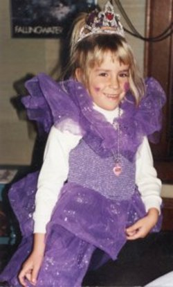

My daughter Jessica was born in 1987. The first month of her life is a blur for me, as for most new Moms. Then, at one month of age she smiled at me, and I thought she was the most beautiful and most perfect baby that had ever existed. That smile, however, was the only developmental milestone that Jessica met on time. At 6 months, when she had not yet rolled over or sat up, she was diagnosed as “developmentally delayed.” When she was 2, and not walking or talking, I got a diagnosis of “Hypomelanosis of Ito” a rare neurological disorder that affects the development of the brain. She slowly met developmental milestones; she did not walk until she was 3 years old, but she could eventually walk and run and climb stairs. She was slow learning to talk but eventually could talk in complete sentences. She continued to be very social and very happy, all pictures of her as a child show her smiling or laughing.
Jessica had her first seizure at age 4. It was not a total surprise since seizures were a common feature of Hypomelanosis of Ito. For the next few years she had only an occasional seizure. The seizures became more frequent during adolescence, about 3/week. She was still able to go to school and participate in recreational programs like therapeutic horseback riding and a dance program for people with disabilities.
Then, dramatically, in her early 20’s the frequency and severity of her seizures inexorably increased, getting worse each year. By age 27 she was averaging 5 seizures/day, with 10 or more on many days. The neurologists taking care of her kept trying different medications, often 3, 4, 5 at a time. We had a vagal nerve stimulator implanted, we tried a low glycemic index diet. The seizure frequency kept increasing and, a result of all the drugs, she was very sleepy all the time. Along with the seizure increase was a steady decrease in all areas of function. By age 27 she was back in diapers (totally toilet trained at age 4). She needed two people to help her walk, she could not sit upright. She was talking very little, drooling profusely, and, most distressingly, staring blankly into space, not smiling, not laughing.
For me this was utterly heartbreaking. Where was my beautiful, happy, social, energetic child? Was she going to keep getting worse? Could she even survive much longer? The only answer I got from her local neurologists (and we saw several) was “that is what can happen with epilepsy, it gets better, it gets worse and we do not know why” and/or “she has severe Lennox–Gastaux syndrome” (a severe epilepsy syndrome of childhood-even though her seizures were not severe as a child).
In total desperation I decided to have her evaluated at the Cleveland Clinic, recommended as the best epilepsy center in the country. We first went in June, 2014 for 12 days of EEG recording. Her EEG pattern fit the description of “ESES,” (electrographic status epilepticus of sleep), typically seen in school age children, not in adults. They started treating her for ESES. The seizures continued to increase. In October, 2014 they did an analysis of cerebral spinal fluid (the fluid that surrounds the brain) to look for abnormalities in brain chemistry. The results showed a low level of “5-MTHF,” an indicator of low brain levels of folate (a form of vitamin B, absolutely essential for normal brain function). Further testing (at Iliad Neurosciences) showed that she has antibodies that prevent folate from getting into the brain. There is a treatment, folinic acid, (Leucovorin) a form of folate that can get into the brain by a mechanism that bypasses the proteins disabled by the antibodies.
Finally, after so many years, we had a new diagnosis (cerebral folate deficiency, CFD), a reason for it (an autoimmune disease) and a treatment (folinic acid). What we do not have is a prognosis, how much better will she get and how quickly - there are no reported cases like my daughter. But utter despair has changed to hope, and I am seeing small improvements, she is still having seizures but she is walking better, drooling less, talking more, sometimes smiling, sometimes laughing. I am seeing glimpses of the happy, social person whom I feared was gone forever!!
I am deeply grateful to many physicians at the Cleveland Clinic for their determination to find out the cause of my daughter’s deterioration, their willingness to explore every avenue, their enthusiasm about collaborating. Cerebral folate deficiency is only recently recognized and the diagnosis requires testing that is not routinely done. I hope that our story will raise awareness of this disease and allow earlier diagnosis and treatment, sparing other families the heartbreak of seeing a child get sicker and sicker and sicker…
Submit a story or comment
We would love to hear your story or comments. Oftentimes a parent’s exchange of information, experiences and advice is priceless. We encourage all to share any feedback or information that you think others may find useful!
If you would like to submit your story or comments please click here.